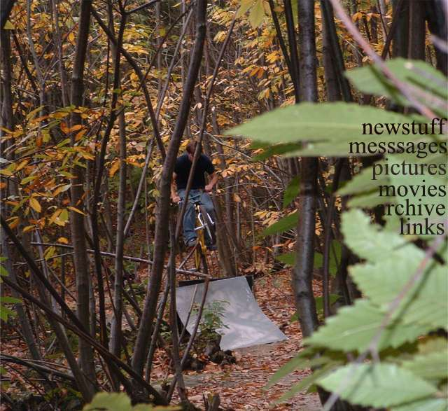
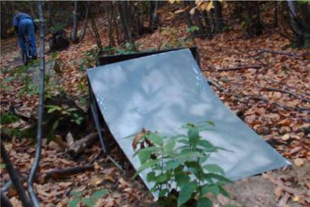
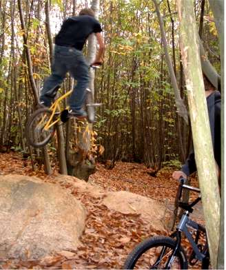
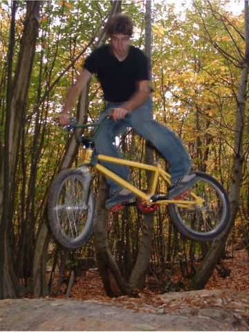
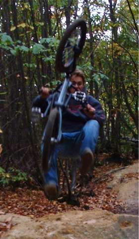
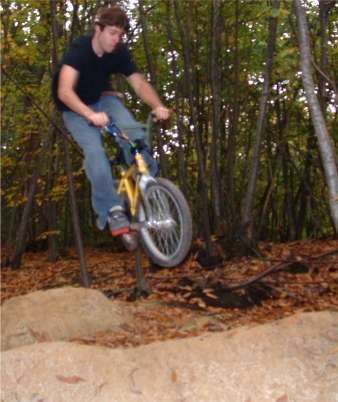
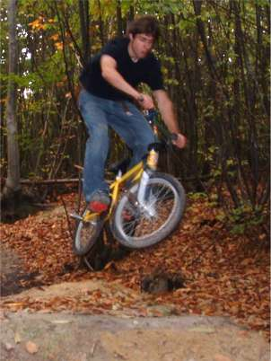
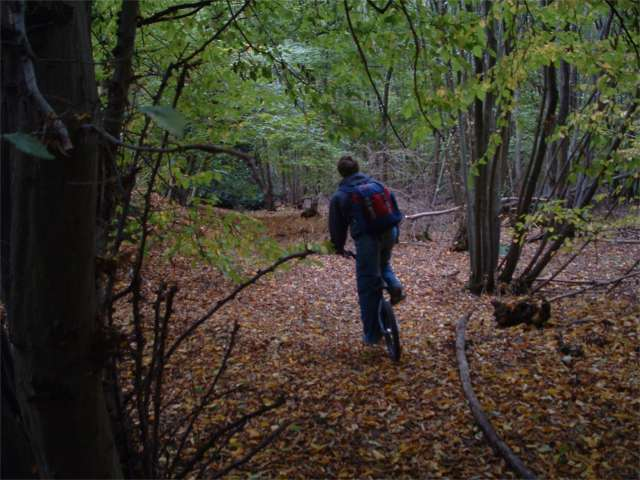

|
 about 6 months ago some people from tenterden trails came to our old trails on their way to a party. we went to visit their trails and were very disapointed. pikeys. i hate pikeys. well i guess it was pikeys who trashed everything but it could have been dog walkers. it was annoying because you could see where all the lines used to be, but nothing in the big section was rideable. it was especially annoying becasue it was a good size for us to try. instead the was a small line which was fun but the jumps were a long way from each other. there were some annoying manual humps in the run up. we found some old metal ramps in a ditch and put them over the maunal humps so we could get a bit more speed and have fun. the metal looks odd in the woods.   the second, or third if you count the metal spine was a nice right hip. good for kickouts. it threw you nice and high too, but the step down made it a bit harsh. hips are a lot of fun.   on the right below is tim trying his manual tricks on dirt and almost falling off. there was a flat bank to log setup as well which we stayed clear of.   the last in the line was a bit tabletop so the landing was very shallow, and we never got round to sweeping it off so it got very sticky. i started to find out what a turndown might feel like and then realised how hard they are. below: when you can't do tricks you prented its style.   becky took most of these pictures. progression. she likes autumn because of all the colours. can you tell?  |